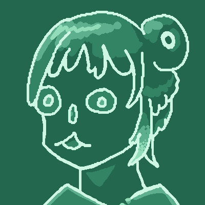

௹
歡迎蒞臨我的主頁！我叫做York, Yorka，或者優佧也可以，我是這個小網頁的主人！
我目前18歲，正在自學程式設計，非常愛玩遊戲，未來希望成為一個獨立遊戲設計師。
我在2026年5月末時開始學習網頁設計以及著手製作這個網站，我很享受設計網頁的過程， 這個網頁就像是我在網路上的倒影，我很開心能夠在嘈雜的網路世界裡存有自己的小空間。
希望你能透過我站內的文章、作品或日誌認識我和我喜歡的東西。我將這種個人網站視作讓世界用全新的角度認識我的一種方式。Please, have a seat!
我主要是一位遊戲程式設計師，但其實我也會繪圖創作，不過我不習慣以藝術家自居就是了，感覺不太符合我的個性。
另外，我擅長如研究資料、報告之類學術性的事務，我發現我比其他人還要對這類事情更加樂在其中。
其實，我沒有任何公眾用的社群媒體"-_-我並不是很習慣用SNS交友或者分享生活。
但未來說不定會製作錄像散文上傳到YouTube上，創作遊戲設計相關的內容。
國中起我就因為老師的教導接觸到Python學到程式設計的基礎，之後就靠Brackeys的教學踏上遊戲設計的不歸路了。
除了遊戲外，書籍、文章和音樂都在我的涉獵範圍內。我的待玩/讀/聽清單大概比壽命還長了，這些東西給我生存下去的動力。
詳細敘述如下：